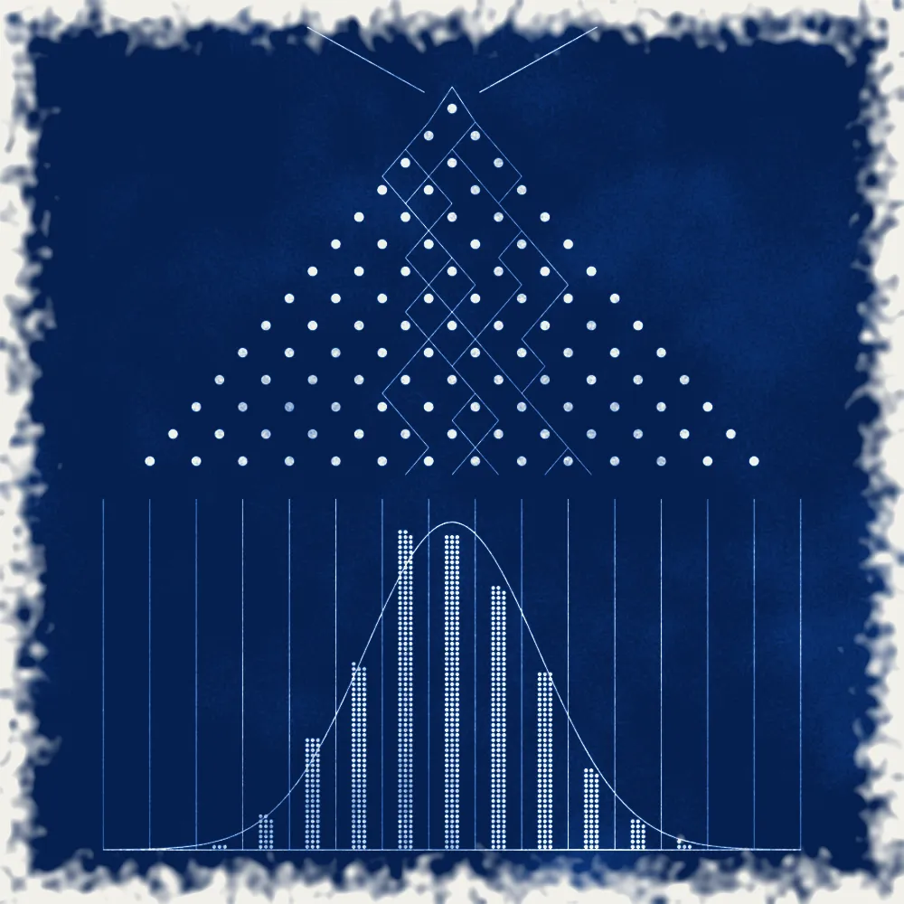
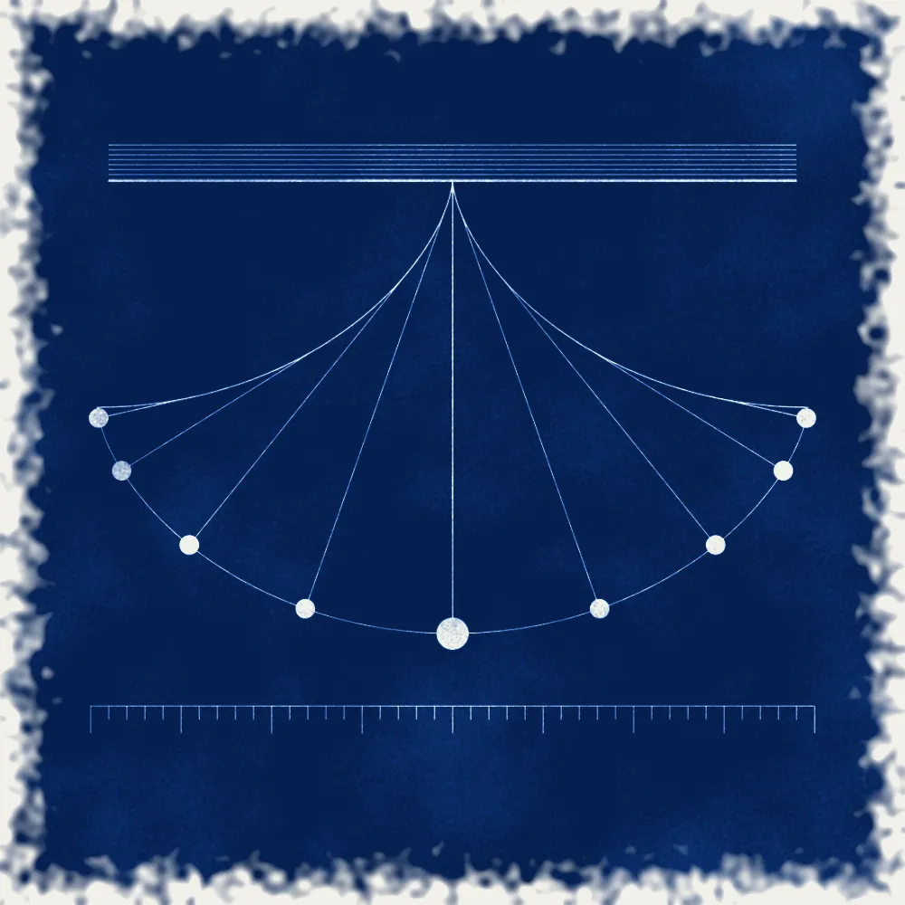

Loss before gain
Every position is sized by what it can lose before what it can earn. Return is the result of that discipline, never the excuse for breaking it.

We do not advertise results. We account for them, in full, to the people entitled to see them.
Investors receive complete performance and risk reporting. Qualified prospective investors can review it under confidentiality.
We do not publish holdings or strategies. They are discussed with investors, and with regulators where required.
We do not comment on markets, positions or results in public, and our people do not either.
Three rules that every model and every person at Joveyra works under.
Every position is sized by what it can lose before what it can earn. Return is the result of that discipline, never the excuse for breaking it.

Once a model is approved it trades as written. People change models through research and review, never in the moment.

The Moon always shows Earth the same face. What we show in public is this website; everything else belongs to our investors.
Nothing on this website is an offer to sell, or a solicitation of an offer to buy, any security, fund interest or investment service. Past performance does not indicate future results. Images: Emmoser, celestial globe with clockwork (1579, The Met); Mellan, the full Moon (1635, The Met); diagrams after Galton and Huygens. Public domain, printed as cyanotypes by Joveyra.
© 2026 Joveyra